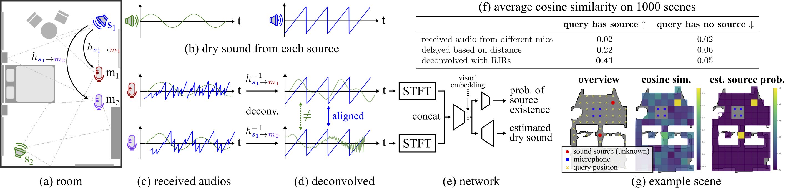

Method
Given a 3D reconstructed room (a) and audio recordings from different microphones (c), we estimate the locations and dry sound of individual sound sources. (d) Our key observation is that when deconvolving the audio recordings with the impulse response from a specific source location, sound emitted from the location will align across individual recordings whereas sound from other locations will not. (e) The alignment of audios across different microphones provides a strong cue for the network. (f) The table shows the cosine similarity between two received/delayed/deconvolved audios on 1000 scenes. (g) The cosine similarity between deconvolved audios and our source detection results on an example scene.